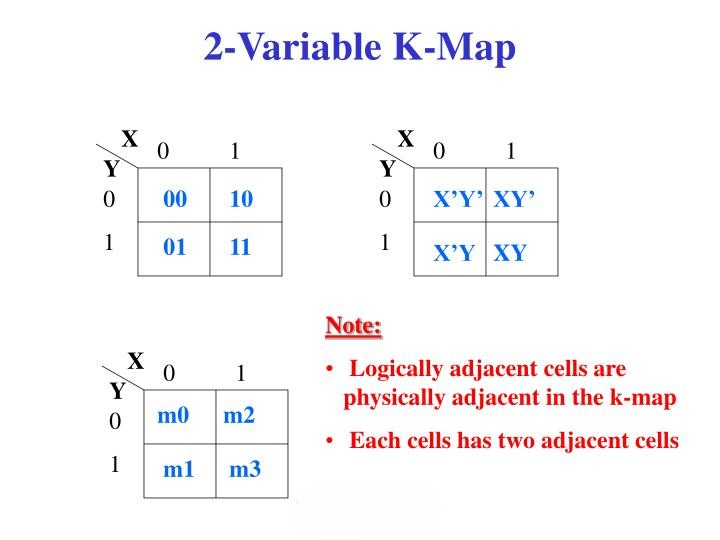
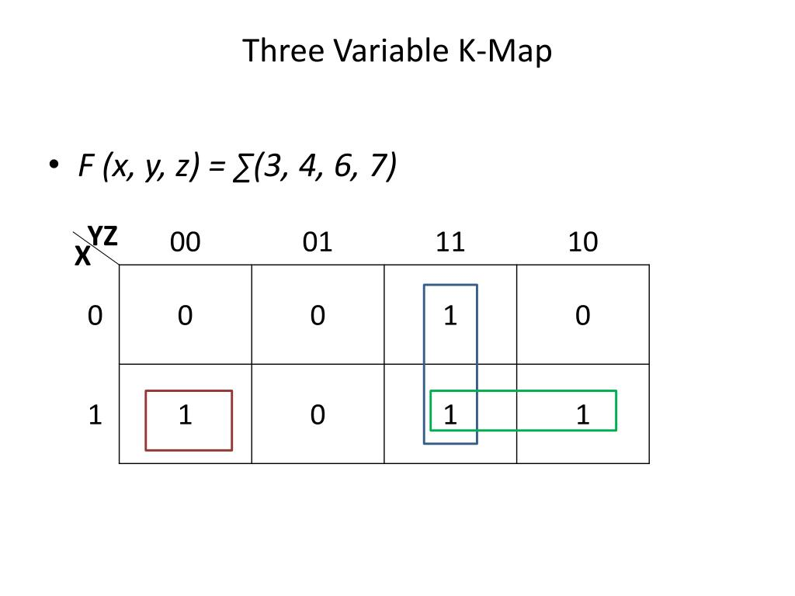
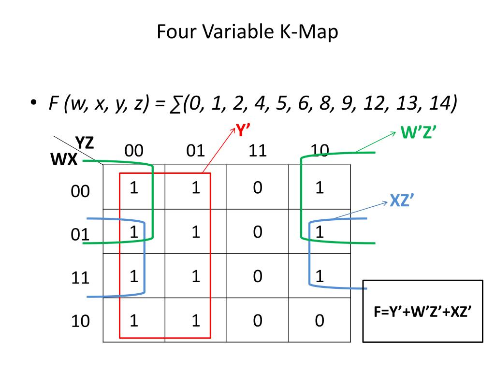

Introduction to Karnaugh Maps
A Karnaugh Map (K-Map) is a graphical method used for simplifying Boolean expressions. It provides an alternative, often faster and more intuitive, approach to Boolean algebra for minimization.
Overview:
- K-maps are a visual representation of a Boolean function or truth table.
- Each cell in the K-map corresponds to one row of the truth table or one minterm (for SOP) or maxterm (for POS).
- Cells are arranged so that adjacent cells (horizontally or vertically, including wrap-around) differ by only one variable, which is key to simplification (Gray code ordering).
- Easy conversion from truth table to K-map and then to a minimized SOP or POS expression.
- Much faster and more efficient than algebraic minimization for a small number of variables (typically up to 5 or 6).
- Unoptimized form: Number of 1s in K-map equals the number of minterms in the canonical SOP.
- Optimized form: Reduced number of terms by grouping 1s (for SOP) or 0s (for POS).
The term 'literal' means a Boolean variable either in its complementary or uncomplementary form (e.g., A, A', B, B'). Minimization aims to reduce the number of terms and the number of literals per term.
Karnaugh Maps - Rules of Simplification
The Karnaugh map uses the following rules for the simplification of expressions by grouping adjacent cells containing ones (for SOP) or zeros (for POS).
Key Grouping Rules:
- Groups may not include any cell containing a zero (for SOP simplification).
(Vice-versa for POS: groups may not include any cell containing a one).

- Groups may be horizontal or vertical, but not diagonal.

- Groups must contain 1, 2, 4, 8, or in general 2n cells. This
means groups of 3, 5, 6, etc., are not allowed.

- Each group should be as large as possible. Larger groups lead to simpler
terms.

- Each cell containing a one (for SOP) must be in at least one group. All 1s
must be covered.

- Groups may overlap. Overlapping is often necessary to achieve the largest
possible groups.

- Groups may wrap around the table. The leftmost cell(s) in a row are
considered adjacent to the rightmost cell(s) in that row. Similarly, top and bottom cells in
a column are adjacent.

- There should be as few groups as possible, as long as this does not
contradict any of the previous rules (especially covering all 1s and making groups as large
as possible). Each group corresponds to one term in the simplified expression.

Summary of Grouping Guidelines:
- No zeros allowed in groups (for SOP).
- No diagonals.
- Group size must be a power of 2 (1, 2, 4, 8...).
- Groups should be as large as possible.
- Every '1' must be in at least one group.
- Overlapping is allowed.
- Wrap-around is allowed.
- Use the fewest number of groups possible to cover all '1's.
2-Variable K-Maps
A 2-variable K-map has 22 = 4 cells. Let the variables be X and Y.
Basic 2-Variable K-Map Structure:
Structure of a 2-variable K-Map for variables X, Y.
The cells on the top row represent X' (not X) and X. The cells on the left column represent Y' (not Y) and Y. The cells can also be labeled with minterm numbers m0, m1, m2, m3 or maxterm numbers M0, M1, M2, M3.

2-Variable K-Map with minterm (SOP) and maxterm (POS) cell assignments.
Example: Minimize DNF: X'Y' + X'Y + XY
Place 1s in the K-map for the given minterms: X'Y' (m0), X'Y (m1), XY (m3).

K-Map for X'Y' + X'Y + XY.
Grouping the 1s:
- The group of two cells in the first column (X'Y' and X'Y) covers Y' and Y, while X' remains
constant. This group reduces to
X'. - The group of two cells in the second row (X'Y and XY) covers X' and X, while Y remains constant.
This group reduces to
Y.
The minimized expression is the OR sum of these terms: Result = X' + Y.
3-Variable K-Maps
A 3-variable K-map has 23 = 8 cells. Let the variables be X, Y, Z. The arrangement ensures adjacency (Gray code sequence for YZ: 00, 01, 11, 10).
Basic 3-Variable K-Map Structure:
Structure of a 3-variable K-Map for X, Y, Z.

3-Variable K-Map with minterm (SOP) and maxterm (POS) cell assignments.
In this map, the leftmost column (YZ=00) is considered adjacent to the rightmost column (YZ=10) for wrap-around grouping.
Example: Minimize DNF: X'Y'Z' + X'YZ' + XYZ' + XY'Z' + X'Y'Z
Place 1s in the K-map cells corresponding to these minterms.
(Original example: xyz + x'yz + xyz' + xy'z + x'y'z from slide.
Let's use slide data.
This is m7, m3, m6, m5, m1.)
F(X,Y,Z) = Σm(1, 3, 5, 6, 7)

Example K-Map for 3 variables (illustration for grouping, not specific to above minterms).
To get a minimal expression, identify the largest possible groups of 1s (pairs, quads):
- The quad covering m1, m3, m5, m7 (X'Y'Z, X'YZ, XY'Z,
XYZ) where Z is always 1, and X, Y vary through all combinations, reduces to
Z. - The pair covering m6, m7 (XYZ', XYZ) where XY is 1 and Z varies, reduces
to
XY.
So, one possible simplified SOP expression is F = Z + XY.
4-Variable K-Maps
A 4-variable K-map has 24 = 16 cells. Let the variables be W, X, Y, Z. Both pairs of variables (WX and YZ) are arranged in Gray code sequence (00, 01, 11, 10).
Basic 4-Variable K-Map Structure:
Structure of a 4-variable K-Map.

4-Variable K-Map with minterm (SOP) and maxterm (POS) cell assignments.
Wrap-around applies to both rows and columns: the top row is adjacent to the bottom row, and the leftmost column is adjacent to the rightmost column. Corners are also adjacent.
Groups can be of size 1, 2, 4, 8, or 16.
Example: Simplify F(A,B,C,D) = Σm(0, 1, 2, 4, 5, 6, 8, 9, 12, 13, 14)

Illustrative 4-Variable K-Map with grouping.
To simplify, one would fill in the 1s for the given minterms and then form the largest possible groups (octets, quads, pairs) to cover all the 1s.
For the example F(A,B,C,D) = Σm(0,1,2,4,5,6,8,9,12,13,14), the simplified expression is C' + A'D' + BD'.
Don't Care Conditions
In some digital systems, certain input combinations may never occur, or if they do, the output value for these combinations is irrelevant. These are called "don't care" conditions.
- Don't care conditions are represented by an 'X' or 'd' in the K-map cells or truth table.
- When forming groups in a K-map, don't care cells can be treated as 1s if doing so helps to form a larger group (thus simplifying the expression further).
- If a don't care cell does not help in forming a larger group, it should be treated as a 0 (for SOP) and left ungrouped.
- Don't cares must not be grouped by themselves to form a term if they are not needed to cover actual 1s.
Example with Don't Cares:
Let F(A,B,C,D) = Σm(1,3,7,11,15) with don't cares d(0,2,5).

Illustrative K-Map showing use of Don't Care (X) conditions.
By including some 'X's as 1s, larger groups can be formed, leading to a simpler expression than if only the actual minterms were grouped.
Minimization of POS Expressions
K-Maps can also be used to simplify Boolean expressions into a minimal Product of Sums (POS) form.
Method for POS Simplification:
- Plot the 0s of the function on the K-map (or plot the 1s of F and then consider the cells not covered, which represent F').
- Group the 0s using the same rules as for grouping 1s (form largest possible groups of 0s - pairs, quads, octets; wrap-around and overlap allowed).
- Each group of 0s corresponds to a sum term for F'.
- Write the SOP expression for F' from these groups of 0s.
- Apply De Morgan's theorem to F' to obtain the minimal POS expression for F.
Alternatively, directly derive the sum terms for F by grouping 0s: For each group of 0s, write a sum term where a variable is complemented if it's 1 in the region of the group, and uncomplemented if it's 0.
Example: Find POS for F(A,B,C) = Σm(0,1,3,5,7)
This means F has 0s at m2, m4, m6.
F(A,B,C) = ΠM(2,4,6)
K-map for F (0s):
| A | 00 BC |
01 | 11 | 10 | |
| 0 | m0=1 | m1=1 | m3=1 | m2=0 | |
| 1 | m4=0 | m5=1 | m7=1 | m6=0 |
Grouping the 0s:
- Group 1 (m2, m6): A varies, B=1, C=0. Term for F': BC'. For F (POS): (B'+C).
- Group 2 (m4, m6): C varies, A=1, B=0. Term for F': AB. For F (POS):
(A'+B'). (Mistake in typical direct translation logic. It's easier to do SOP of F' then
DeMorgan)
Let's do SOP of F':
Group of m2, m6 (010, 110) => F' term is BC'
Group of m4 (100) => F' term is AB'C' (if m6 is already covered) or m4,m6 pair => AC'
So, F' = BC' + AB'C' (if m6 grouped with m2 only) OR F' = AC' + BC'
If F' = AC' + BC' = C'(A+B).
Then F = (C'(A+B))' = C + A'B'. This is SOP.
Let's use the standard method for POS (grouping 0s to write sum terms for F directly):
- Group m2(010), m6(110) -> B is 1, C is 0. Term for F: (B' + C). (Variable is complemented if it's 1 for the group, uncomplemented if 0).
- Group m4(100), m6(110) -> A is 1, C is 0. Term for F: (A' + C).
F = (A' + C) (B' + C).
4-Variable K-Map with maxterm cell assignments (useful for POS).
Interactive 2-Variable K-Map Tool (SOP)
Click on cells to set them to '1'. The tool will attempt to show the simplified SOP expression. (Simplification logic is basic).